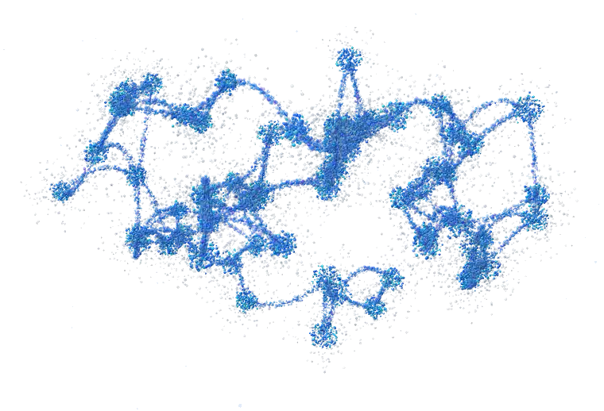
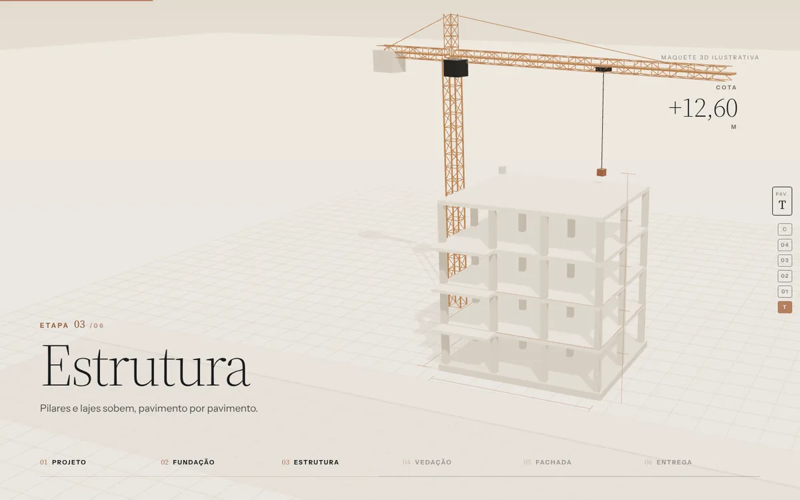
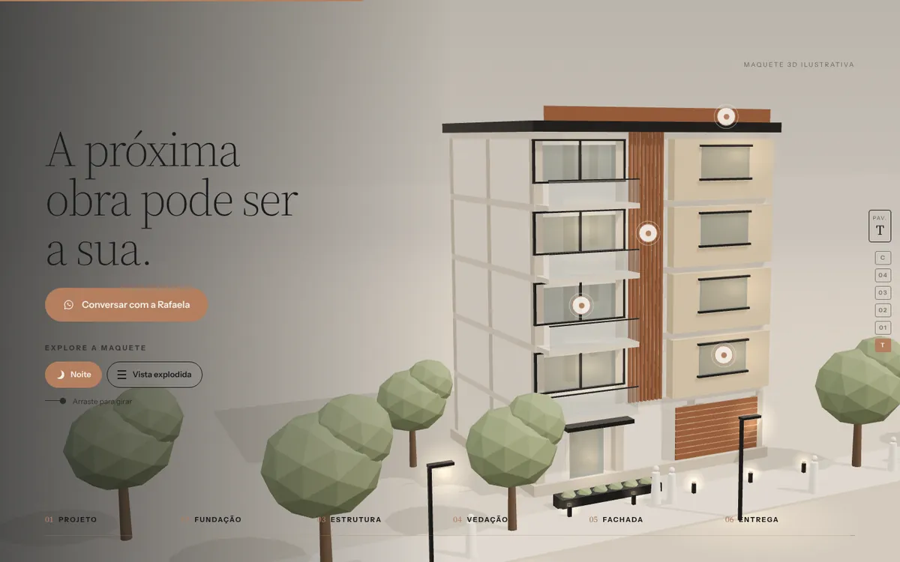

A inteligência da sua empresa ganha forma.
A Konan Tech transforma informações soltas em planilhas, papéis e mensagens em sistemas, automações e painéis feitos para o jeito que a sua empresa trabalha.
Passe o mouse sobre os dados. Clique e segure para atrair.
Cinco formas de colocar a operação nos trilhos.
Começamos pelo problema, não pela tecnologia. Passe por cada frente e veja os dados mudarem de forma.
- Sistemas sob medida Para quando a operação depende de planilhas soltas e controles paralelos. Painel para o gestor e aplicativo para a equipe, desenhados a partir do processo que já existe. Ver o universo dos sistemas
- Automação de processos Para quando a equipe passa o dia repetindo as mesmas tarefas. Registros, avisos, tarefas e respostas que acontecem sozinhos, ligando as ferramentas que você já usa. Abrir o simulador
- Inteligência artificial Para quando notas, documentos e mensagens são digitados à mão. Leitura de documentos, classificação e assistentes que trabalham com os dados da empresa, sempre com uma pessoa conferindo o que importa. Entrar no laboratório
- Dashboards e indicadores Para quando as decisões são tomadas sem números confiáveis. Os números da operação reunidos num painel claro, atualizado e fácil de acompanhar. Ver um painel se montar
- Sites e presença digital Para quando o cliente não encontra ou não entende a empresa. Sites rápidos e claros, pensados para o cliente entender o que você faz e chamar. Ver sites entregues
Projetos reais, cada um no seu estágio.
Sistemas em operação, em implantação e em testes, e sites entregues. Abra um projeto para ver o problema, a solução, as telas e o estágio atual.
-
Obra em DiaVisão geralLançamentosEtapasRelatórios
Residencial Aurora
IA lançou 3 notas hojeOrçadoR$ 480 mil
RealizadoR$ 312 mil
SaldoR$ 168 mil
Evolução por etapa- Fundação
- Estrutura
- Alvenaria
- Instalações
Gastos por mêsLançamentos financeiros, notas e a evolução de cada obra ficavam espalhados, e a visão do todo dependia de juntar planilhas.
Uma plataforma que reúne lançamentos financeiros, indicadores e a evolução de cada obra em um só lugar, com inteligência artificial ajudando nos lançamentos.
- Controle financeiro por obra
- Orçado, realizado e saldo sempre atualizados
- Evolução por etapa
- Inteligência artificial nos lançamentos
Telas ilustrativas com dados fictícios. O sistema está em implantação.
-
Serviços do dia
Distribuição por regiãoOrdens48
Executadas31
A caminho12
OS 1042Cozinha planejadaA caminho
OS 1043Armário de quartoExecutado
OS 1044Painel de TVPendente
OS 1045Home officeCliente ausente
Minhas ordens
Armário de quarto08h00, executado
Cozinha planejada10h30, a caminho
Painel de TV14h00
Iniciar montagem
Coordenar montadores, ordens de serviço e planilhas que não conversavam entre si, todos os dias.
Aplicativo para os montadores em campo e painel para o gestor acompanhar as ordens de serviço do dia, da distribuição até a conclusão.
- Painel do gestor e aplicativo do montador
- Status de cada ordem em tempo real
- Distribuição por região e rota do dia
- Notificações e funcionamento sem internet
- Mais de 200 atendimentos organizados por dia
Telas ilustrativas. As telas reais pertencem ao cliente.
-
Nova despesa
FornecedorDepósito Central
ValorR$ 2.340,00
Confirmar lançamento
Planilha da obra
Somente visualizaçãoDataFornecedorCategoriaValor
10/11Areia e britaMaterialR$ 980,00
11/11Locação de andaimeEquipamentoR$ 1.150,00
12/11Depósito CentralMaterialR$ 2.340,00
13/11Lançado por vozMão de obraR$ 600,00
Cada despesa da obra precisava ser digitada à mão, e a diretoria não tinha visão rápida dos gastos.
A equipe envia foto da nota ou um áudio, a inteligência artificial preenche os campos e tudo vai para uma planilha do Google Sheets que a diretoria acompanha.
- Leitura de notas fiscais por foto
- Lançamento por voz
- Integração com Google Sheets
- Perfis para quem envia, quem aprova e quem só acompanha
Telas ilustrativas com dados fictícios. O sistema está em testes.
-
Via Opus


Apresentar a construtora com clareza e transformar visitas em pedidos de orçamento.
Um site institucional com estrutura pensada para gerar contatos, apresentação dos serviços e versão completa para celular.
- Site institucional
- Estrutura pensada para gerar contatos
- Versão completa para celular


Capturas do site publicado.
-
Caça RuídosCaça Ruídos
Instagram
Explicar um serviço técnico de forma simples e manter uma comunicação constante com os clientes.
Site institucional e cuidado com o Instagram e a comunicação, com identidade visual própria.
- Site institucional
- Instagram e comunicação
- Identidade visual aplicada
Composição ilustrativa.
O próximo projeto pode ser o da sua empresa. Conte o que trava a operação: a primeira conversa é sem compromisso.
Montar o meu diagnósticoUma nota entra. Uma despesa conferida sai.
No laboratório, um scanner lê o documento, cada informação vai para o seu campo e regras conferem tudo antes da aprovação. Escolha um documento e edite o que quiser.
- Receber
- Identificar
- Extrair
- Classificar
- Organizar
- Encaminhar
Aguardando documento
Simulação com documentos fictícios. As partículas ao fundo são uma ilustração: o processamento real combina leitura do documento, um modelo de linguagem e regras de conferência definidas com a sua equipe, e nada é pago sem uma pessoa aprovar.
Escolha o seu ramo e veja o trabalho manual virar fluxo.
Cada etapa automatizada é uma tarefa a menos para a equipe. A decisão que importa continua com uma pessoa.
Como é hoje
Com automação
Simulação. Na prática, o fluxo liga as ferramentas que você já usa, como WhatsApp, email, planilhas e o seu sistema.
Do dado espalhado ao painel que mostra a operação inteira.
Role devagar: as peças soltas da sua operação se juntam num sistema. No fim, o painel funciona de verdade, com filtros, alertas e relatório.
Alertas
- Pedido 2297 lançado em duplicidade foi identificado e separado.
Relatório
Resumo pronto para enviar à diretoria.
Dados fictícios
Arraste e veja a operação se organizar.
À esquerda, o dia a dia sem sistema. À direita, a mesma operação com tudo conectado. A linha divide a página e os dados ao mesmo tempo.
Antes
- Planilhas desconectadas
- Retrabalho todos os dias
- Informações duplicadas
- Difícil acompanhar resultados
- Falta de indicadores
Depois
- Dashboard com a operação inteira
- Informações centralizadas
- Fluxos automatizados
- Indicadores claros
- Mais controle da operação
Do primeiro contato ao sistema em uso.
Você sabe o que vai receber, quanto custa e quando fica pronto antes de começarmos.
- 1
Diagnóstico
Conversamos sobre a operação, entendemos o problema e mapeamos onde a tecnologia gera mais resultado.
- 2
Proposta
Você recebe escopo, etapas, prazos e valor definidos antes de qualquer desenvolvimento.
- 3
Desenvolvimento
Construímos em ciclos curtos, com versões de teste para a equipe usar e opinar.
- 4
Acompanhamento
Depois da entrega seguimos juntos com suporte, ajustes e melhorias contínuas.
Eu coordenava montadores, ordens de serviço e planilhas que não conversavam entre si. O MontaCerto nasceu desse dia a dia, e é assim que tratamos cada projeto: processo antes do código.
- +200atendimentos organizados por dia no MontaCerto
- 30montadores usando o aplicativo em campo
- 5projetos desenvolvidos, entre sistemas e sites
Monte o diagnóstico do seu desafio.
Três perguntas rápidas. No fim, a mensagem fica pronta para enviar pelo WhatsApp, direto para quem desenvolve.
Seu diagnóstico
Responda as perguntas e veja como começaríamos.
Mensagem no WhatsApp
Olá, vim pelo site da Konan Tech e quero conversar sobre uma solução para a minha empresa.
Ou ligue para (61) 98227 0780
Dúvidas frequentes
Não. Basta contar como funciona hoje e o que incomoda. Transformar o problema em solução é o nosso trabalho.
Sim. Atendemos principalmente pequenas e médias empresas, com soluções do tamanho da necessidade e sem funcionalidades que ninguém vai usar.
Depende do escopo. Depois da conversa inicial você recebe uma proposta com valor e etapas definidos antes de qualquer desenvolvimento começar.
Pode. Vários dos nossos sistemas usam o Google Sheets como base, então a equipe continua vendo e conferindo os dados onde já está acostumada.
Quando faz sentido para a operação: leitura automática de notas fiscais, organização de documentos, resumos e assistentes que respondem dúvidas sobre os dados da empresa, sempre com uma pessoa conferindo o que importa.
Oferecemos acompanhamento mensal com suporte, ajustes e melhorias contínuas. O sistema evolui junto com a empresa.
Sim. O trabalho é feito online, com reuniões por vídeo, para empresas de todo o Brasil.
Sua empresa também pode ganhar forma.
Conte como a operação funciona hoje. A primeira conversa é sem compromisso e você fala direto com quem desenvolve.